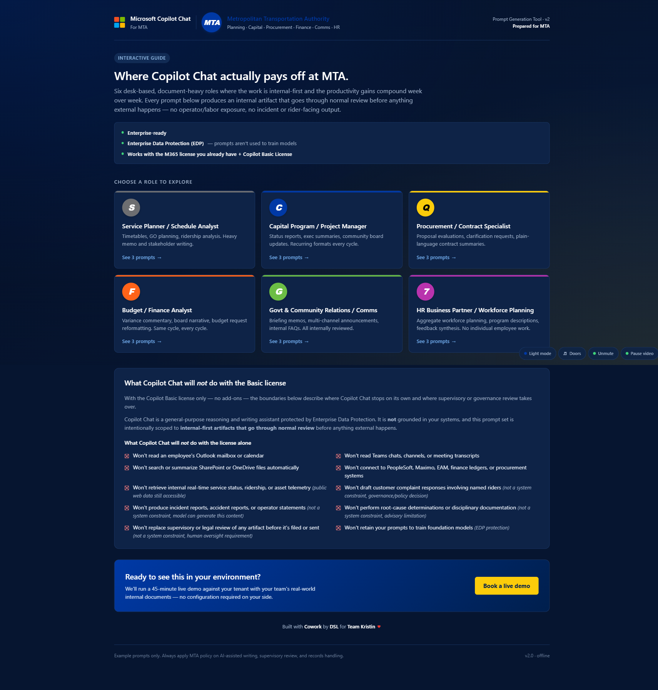
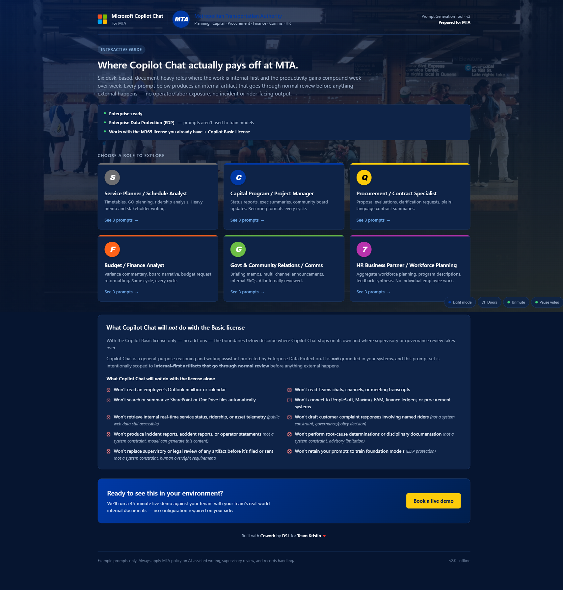
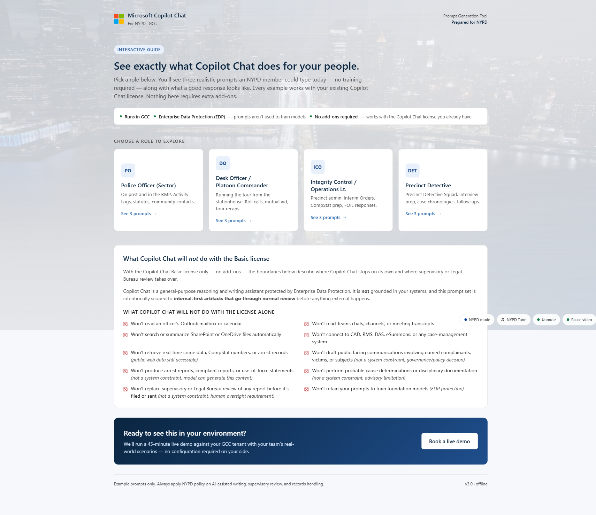
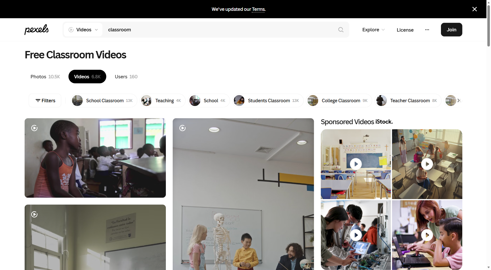
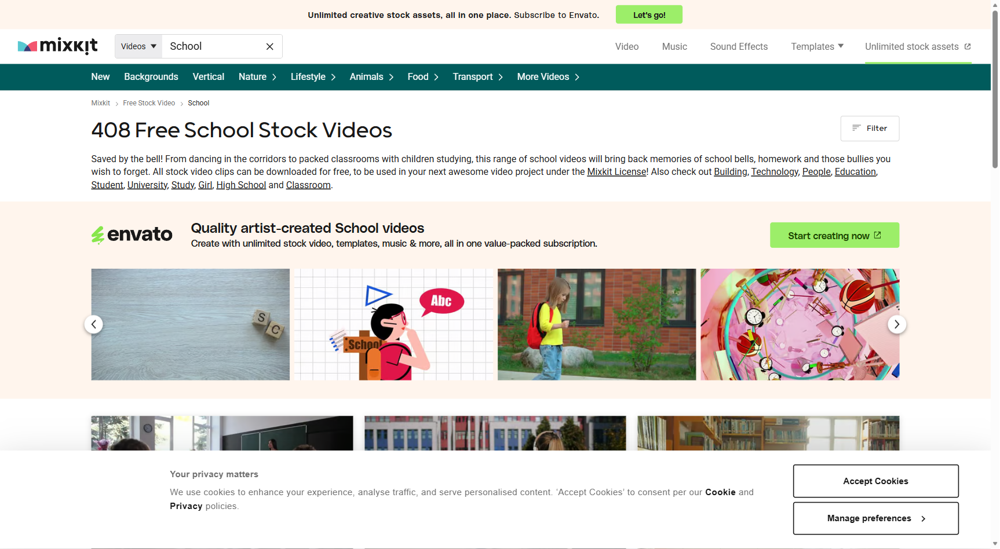
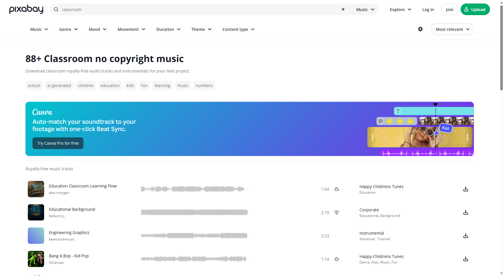
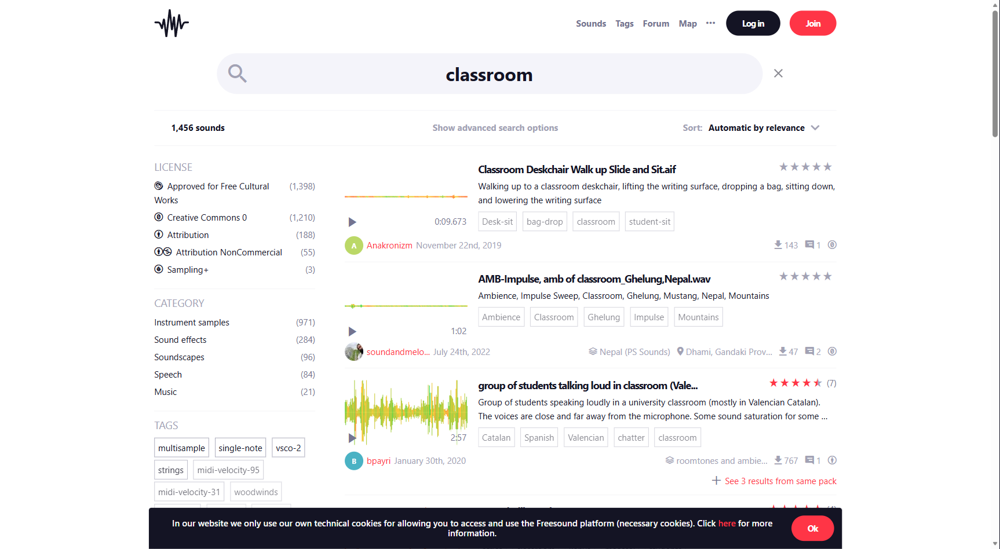
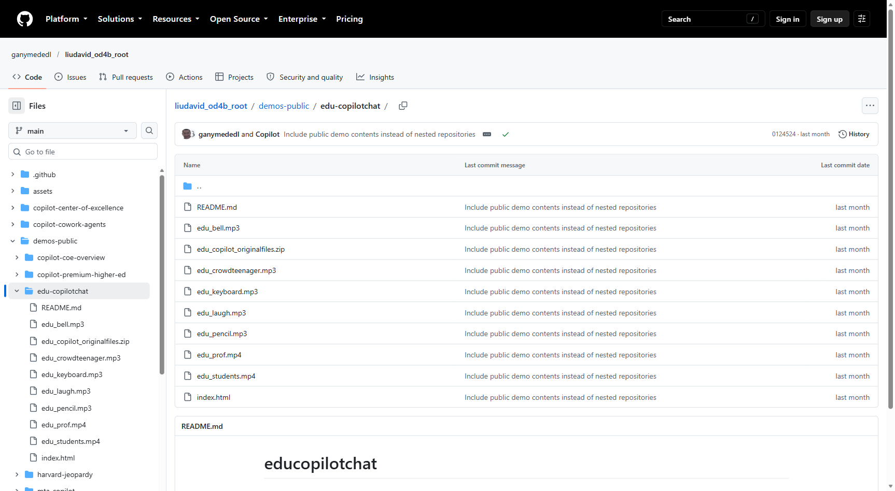
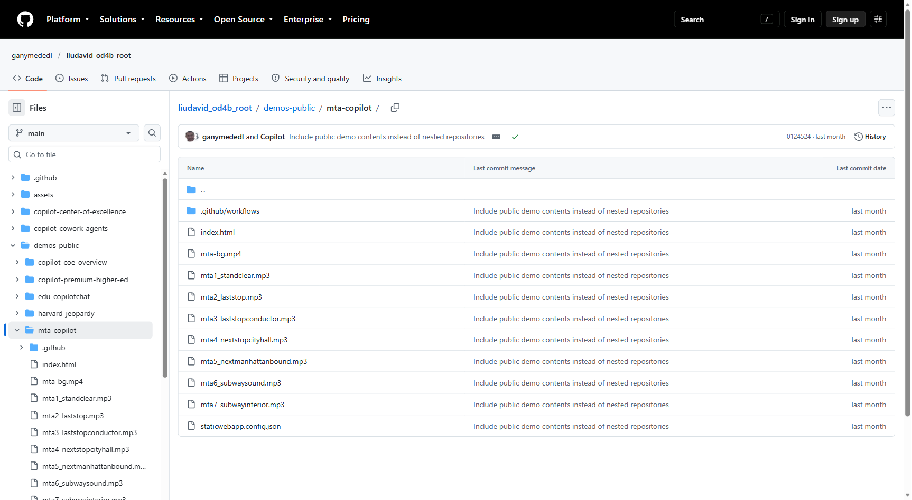
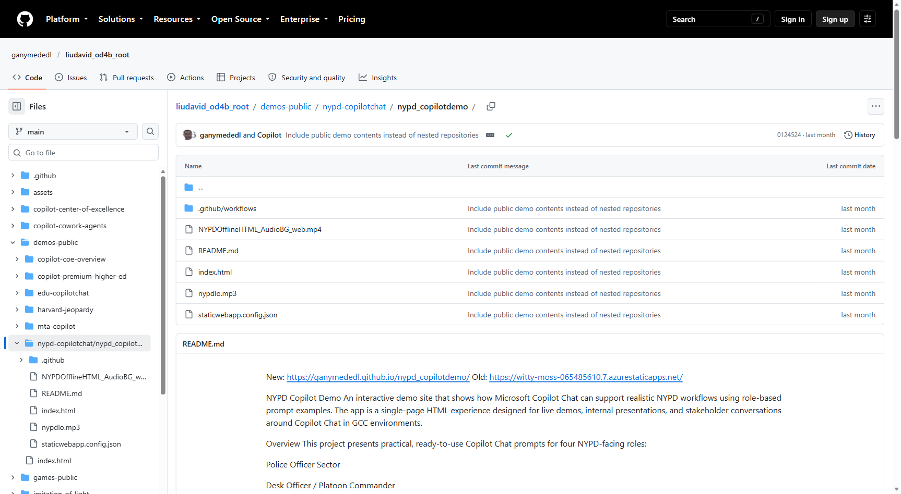

1. EDU Copilot Chat
Education prompt generation experience for back-office workflows.
https://ganymededl.github.io/educopilotchat/Quickstart for admins to build and host a self-contained Copilot Chat prompt site for adoption. This condenses the runbook into prerequisites plus step-by-step execution that works for GitHub Pages, intranet, or SharePoint Online hosting.
index.html (no nested media path).file://, use a fallback copy method in the page script.
Education prompt generation experience for back-office workflows.
https://ganymededl.github.io/educopilotchat/
Static-hosted variant that can be mirrored to SPO/intranet delivery paths.
https://witty-hill-0bbbc0a10.7.azurestaticapps.net/
Role-based prompt demo used as a practical structure baseline.
https://ganymededl.github.io/nypd_copilotdemo/
Free stock classroom footage to source short ambient MP4 clips.
https://www.pexels.com/search/videos/classroom/
Another free source for education/school B-roll video loops.
https://mixkit.co/free-stock-video/school/
Free MP3 music and effects for bell/chatter/typing ambient cues.
https://pixabay.com/music/search/classroom/
Community audio library for classroom sound effects and alternates.
https://freesound.org/search/?q=classroomAlways verify each asset's license terms and attribution requirements before distributing inside your organization.



Red square callouts highlight the media file area so admins can spot the exact assets faster.